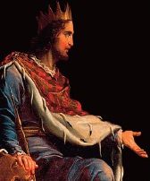

Kral Süleyman, Kral Davut’un Batşeba’dan olan ikinci oğlu ve İsrail tahtının varisiydi. Hükümdarlığı sırasında Süleyman, gücünü siyasi evliliklerin yanı sıra Mısır ve Sûr (Lübnan) ile olan dostane ilişkileri yoluyla topladı ve hafızalara yer eden bilgeliği ve adalet anlayışıyla tanındı.

Süleyman’ın hükümdarlığı, en azından başlangıçta, ihtişamlıydı, Kudüs’ün ilk tapınağı, onun önderliğinde MÖ X. yüzyılda yapıldı. Tapınak, orijinal haldeki On Emir’i barındıran Ahit Sandığı’nın evi olduğu kadar Yahudi ibadetinin de merkeziydi. MÖ VI. yüzyılda Babil hükümdarı II. Nebukadnezar tarafından yıkılana kadar neredeyse 400 yıl ayakta kaldı. Tapınağa ek olarak Kral Süleyman, İsrail krallığına diğer gösterişli yapılar ve altın bolluğuyla büyük zenginlik getirdi.
Tapınak, muhtemelen Süleyman’ın en büyük başarısı olurken, bazılarınca onun pagan olduğu yönündeki eleştirilere dayanak teşkil ederek düşüşünün de nedeni oldu. Kenan ve Fenike mimarisini yansıttığı bilinen tapınak, eleştirmenlerce Yahudilik’te yasaklanmış, putlaştırılmış bir anıt olarak görüldü.
Süleyman, ittifaklar ve siyasi evlilikler yoluyla barışı tesis etti. Krallar kitabı 11:3’te, 700 karısı ve 300 cariyesi olduğu söylenir. Siyasi kazanımlar için başvurduğu çokeşlilik içeride ciddi derecede didişmelere neden oldu, çünkü kadınların çoğu putperestti ve Süleyman, Yahudi geleneklerini onlara uygulatmak adına çok az şey yaptı. Gerilimler, pek çok kimsenin onun liderliğini sorgulamaya başlamasıyla büyüdü ve ölümünün ardından İsrail’in kuzey ve güneyi, neredeyse yüzyıllık bir birlikten sonra tekrar ayrıldı.
Kral Süleyman halen, kendisinden sonra gelen İncil’deki hikâyeyle örneklendirilen müthiş bilgeliğiyle bilinir. Hikayede iki kadın, bir bebekle beraber Süleyman’ın karşısına çıkar. Kadınların ikisi de bebeğin kendisinin olduğunu iddia etmektedir. Süleyman, beklenmedik bir kararla, bebeğin kesilerek iki parçaya bölünmesini ve kadınlara paylaştırılmasını emreder. Sahte anne, buna razı gelir fakat çocuğuna herhangi bir zarar gelmesini istemeyen gerçek anne Süleyman’dan diğer kadının bebeği almasına izin vermesini ister. Süleyman, hiçbir kadının kendi çocuğunun zarar görmesini istemeyeceğini bilerek gerçek annenin o olduğunu anlar.
EK BİLGİLER:
MÖ 586’da yıkılan ilk Süleyman tapınağı, MÖ 515’te yapılan ikinci bir tapınakla tamamlandı. İkinci tapınak daha sonra Romalılar tarafından MS 70’te yok edildi. Yahudiler, Mesih’in gelişi sırasında, tapınakların bulunduğu yerde üçüncü bir tapınağın inşa edileceğine inanır.
Babilliler’in tapınağı yok etmesinden sonra Ahit Sandığı kaybolmuştur. Sandığın çalındığı ve yok edildiği tahmin edilse de, bazıları onun hâlâ saklandığına inanırlar.